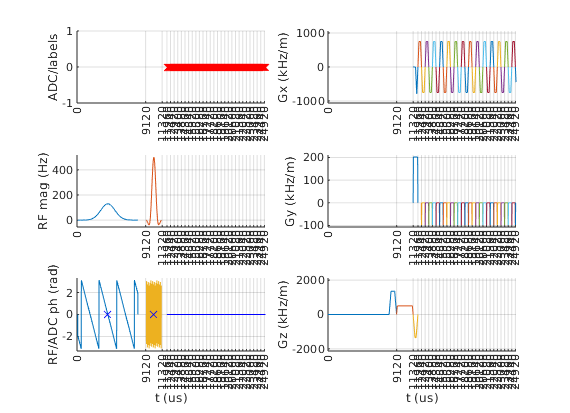
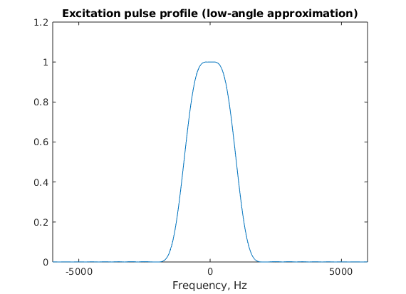

Contents
seq=mr.Sequence();
fov=256e-3; Nx=64; Ny=Nx;
thickness=4e-3;
Nslices=3;
pe_enable=1;
ro_os=1;
readoutTime=4.2e-4;
partFourierFactor=1;
lims = mr.opts('MaxGrad',32,'GradUnit','mT/m',...
'MaxSlew',130,'SlewUnit','T/m/s',...
'rfRingdownTime', 30e-6, 'rfDeadtime', 100e-6);
B0=2.89;
sat_ppm=-3.45;
sat_freq=sat_ppm*1e-6*B0*lims.gamma;
rf_fs = mr.makeGaussPulse(110*pi/180,'system',lims,'Duration',8e-3,...
'bandwidth',abs(sat_freq),'freqOffset',sat_freq);
gz_fs = mr.makeTrapezoid('z',lims,'delay',mr.calcDuration(rf_fs),'Area',1/1e-4);
[rf, gz, gzReph] = mr.makeSincPulse(pi/2,'system',lims,'Duration',3e-3,...
'SliceThickness',thickness,'apodization',0.5,'timeBwProduct',4);
trig=mr.makeDigitalOutputPulse('osc0','duration', 100e-6);
deltak=1/fov;
kWidth = Nx*deltak;
blip_dur = ceil(2*sqrt(deltak/lims.maxSlew)/10e-6/2)*10e-6*2;
gy = mr.makeTrapezoid('y',lims,'Area',-deltak,'Duration',blip_dur);
extra_area=blip_dur/2*blip_dur/2*lims.maxSlew;
gx = mr.makeTrapezoid('x',lims,'Area',kWidth+extra_area,'duration',readoutTime+blip_dur);
actual_area=gx.area-gx.amplitude/gx.riseTime*blip_dur/2*blip_dur/2/2-gx.amplitude/gx.fallTime*blip_dur/2*blip_dur/2/2;
gx.amplitude=gx.amplitude/actual_area*kWidth;
gx.area = gx.amplitude*(gx.flatTime + gx.riseTime/2 + gx.fallTime/2);
gx.flatArea = gx.amplitude*gx.flatTime;
adcDwellNyquist=deltak/gx.amplitude/ro_os;
adcDwell=floor(adcDwellNyquist*1e7)*1e-7;
adcSamples=floor(readoutTime/adcDwell/4)*4;
adc = mr.makeAdc(adcSamples,'Dwell',adcDwell,'Delay',blip_dur/2);
time_to_center=adc.dwell*((adcSamples-1)/2+0.5);
adc.delay=round((gx.riseTime+gx.flatTime/2-time_to_center)*1e6)*1e-6;
gy_parts = mr.splitGradientAt(gy, blip_dur/2, lims);
[gy_blipup, gy_blipdown]=mr.align('right',gy_parts(1),'left',gy_parts(2),gx);
gy_blipdownup=mr.addGradients({gy_blipdown, gy_blipup}, lims);
gy_blipup.waveform=gy_blipup.waveform*pe_enable;
gy_blipdown.waveform=gy_blipdown.waveform*pe_enable;
gy_blipdownup.waveform=gy_blipdownup.waveform*pe_enable;
Ny_pre=round(partFourierFactor*Ny/2-1);
Ny_post=round(Ny/2+1);
Ny_meas=Ny_pre+Ny_post;
gxPre = mr.makeTrapezoid('x',lims,'Area',-gx.area/2);
gyPre = mr.makeTrapezoid('y',lims,'Area',Ny_pre*deltak);
[gxPre,gyPre,gzReph]=mr.align('right',gxPre,'left',gyPre,gzReph);
gyPre = mr.makeTrapezoid('y',lims,'Area',gyPre.area,'Duration',mr.calcDuration(gxPre,gyPre,gzReph));
gyPre.amplitude=gyPre.amplitude*pe_enable;
for s=1:Nslices
seq.addBlock(rf_fs,gz_fs);
rf.freqOffset=gz.amplitude*thickness*(s-1-(Nslices-1)/2);
seq.addBlock(rf,gz,trig);
seq.addBlock(gxPre,gyPre,gzReph);
for i=1:Ny_meas
if i==1
seq.addBlock(gx,gy_blipup,adc);
elseif i==Ny_meas
seq.addBlock(gx,gy_blipdown,adc);
else
seq.addBlock(gx,gy_blipdownup,adc);
end
gx.amplitude = -gx.amplitude;
end
end
check whether the timing of the sequence is correct
[ok, error_report]=seq.checkTiming;
if (ok)
fprintf('Timing check passed successfully\n');
else
fprintf('Timing check failed! Error listing follows:\n');
fprintf([error_report{:}]);
fprintf('\n');
end
Timing check passed successfully
do some visualizations
seq.plot();
[ktraj_adc, ktraj, t_excitation, t_refocusing, t_adc] = seq.calculateKspace();
time_axis=(1:(size(ktraj,2)))*lims.gradRasterTime;
figure; plot(time_axis, ktraj');
hold on; plot(t_adc,ktraj_adc(1,:),'.');
figure; plot(ktraj(1,:),ktraj(2,:),'b');
axis('equal');
hold on;plot(ktraj_adc(1,:),ktraj_adc(2,:),'r.');
return;

 
another manual pretty plot option
lw=1;
gw=seq.gradient_waveforms();
ofs=2.05*max(abs(gw(:)));
figure; plot(time_axis, gw(3,:)+2*ofs,'Color',[0,0.5,0.3],'LineWidth',lw);
hold on; plot(time_axis, gw(2,:)+1*ofs,'r','LineWidth',lw);
plot(time_axis, gw(1,:),'b','LineWidth',lw);
t_adc_gr=t_adc+0.5*seq.gradRasterTime;
gwr_adc=interp1(time_axis,gw(1,:),t_adc_gr);
plot(t_adc_gr,gwr_adc,'b.','MarkerSize',3*lw);
xlim([-0.03*time_axis(end),1.03*time_axis(end)]);
new higher-performabce trajectory calculation
[ktraj_adc1, t_adc1, ktraj1, t_ktraj1, t_excitation1, t_refocusing1] = seq.calculateKspacePP();
figure; plot(t_ktraj1, ktraj1');
hold on; plot(t_adc1,ktraj_adc1(1,:),'.');
figure; plot(ktraj1(1,:),ktraj1(2,:),'b');
axis('equal');
hold on;plot(ktraj_adc1(1,:),ktraj_adc1(2,:),'r.');
compare both
figure; plot(time_axis, ktraj');
hold on; plot(t_ktraj1, ktraj1','-.');
prepare the sequence output for the scanner
seq.setDefinition('FOV', [fov fov thickness]);
seq.setDefinition('Name', 'epi');
seq.write('epi_rs.seq');
very optional slow step, but useful for testing during development e.g. for the real TE, TR or for staying within slewrate limits
rep = seq.testReport;
fprintf([rep{:}]);